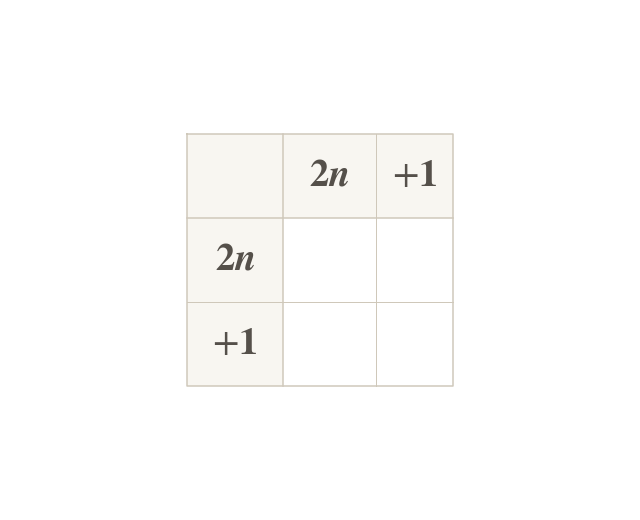
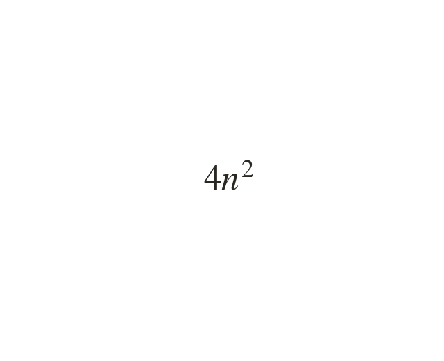
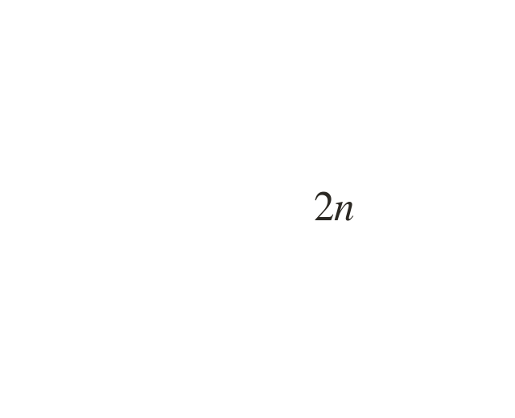
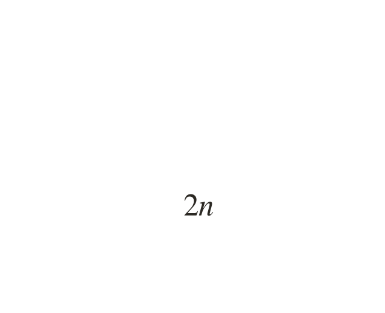
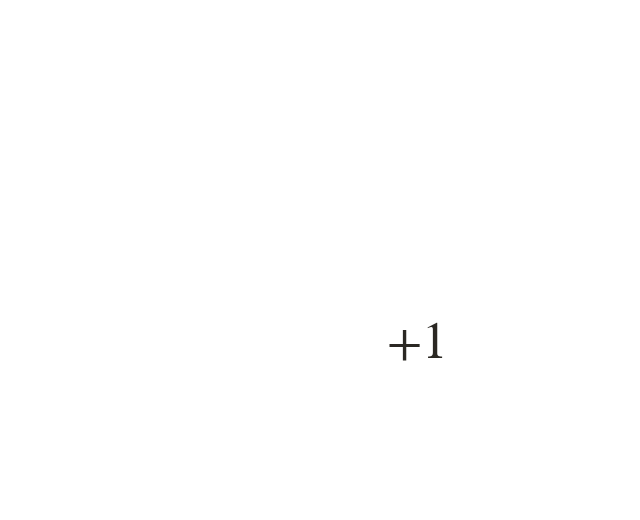

Squaring keeps the middle term
Squaring an expression expands the whole bracket. An odd number squared is
Squaring an algebraic integer means expanding the whole bracket. The square of an odd number is middle term and all.